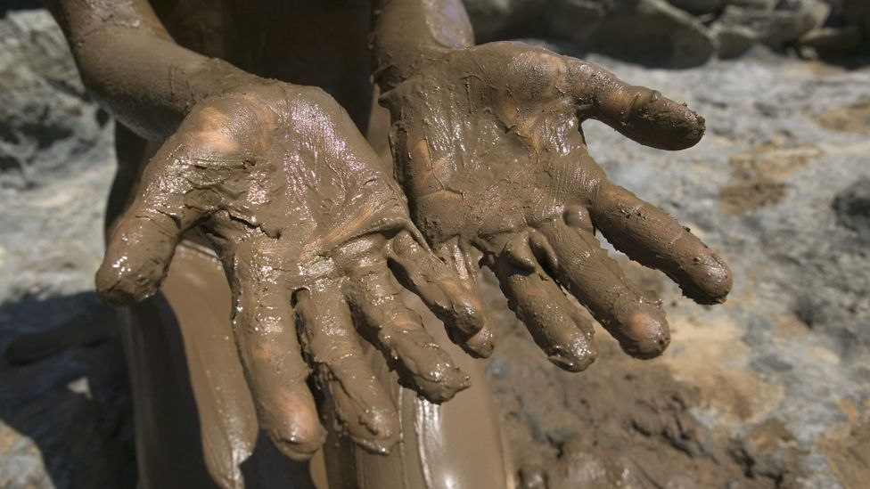

Muddy Hands

Muddy Hands can be enjoyed by all ages.
Description
Muddy Hands is a earthy dessert traditionally eaten using the hands.
Ingredients
Instructions
- Add the dirt and water into a mixing bowl.
- Using a whisk, beat the water into the dirt until combined.
- Pour the mixture into a deep-walled baking sheet. Spread evenly.
- Carefully place both hands onto the baking sheet until they are covered with the mixture.
- Enjoy!
Return to Index